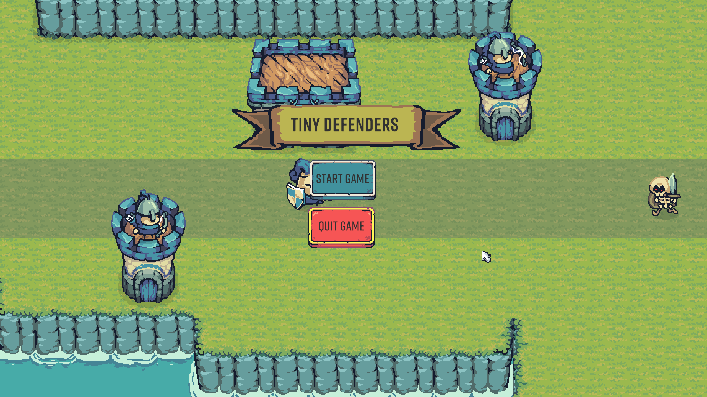
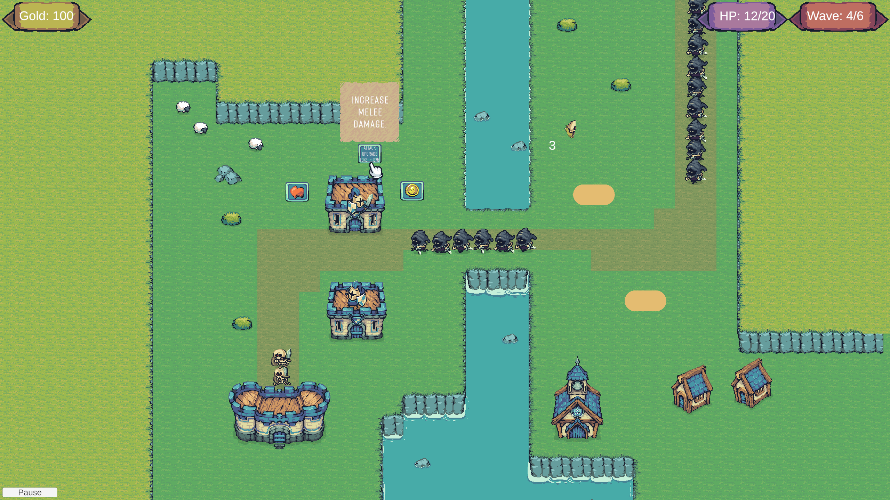
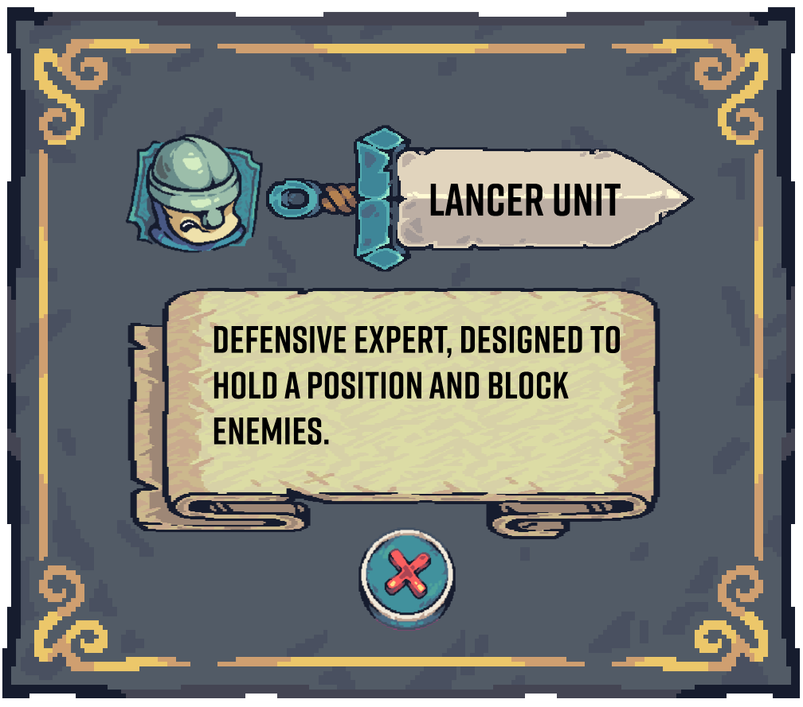

PROJECT / SPRING 2026
Tiny Defenders
Overview
The core concept of this game was for it to be a 2D tower defense with Rogue-Lite elements. You defend agaisnt waves of monsters, strategize how you will defend your castle and where to place your troops, and which upgrade paths to prioritize.
The Rogue-Lite elements incorporated into the game is that after every wave, you are presented with an upgrade to choose for your troops. the upgrades range from simple stat buffs to certain troops or unlocking new upgrade paths for your troops/towers.
My Role
- Created a 2D tower defense game in Unity where players strategically place and upgrade defenses to stop waves of enemies.
- Served as the sole developer, responsible for all gameplay programming, system design, and applying software principles.
- Developed core systems including enemy wave spawning, waypoint navigation, tower placement, upgrade trees, ally behaviors, health management, and UI functionality.
- Used Git for source control and version management throughout the project lifecycle.
Project Images


